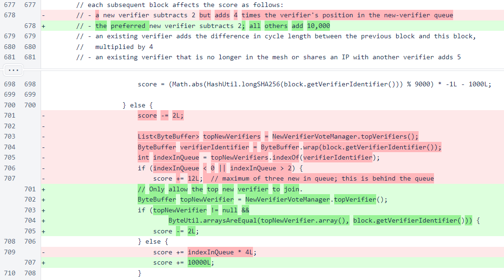
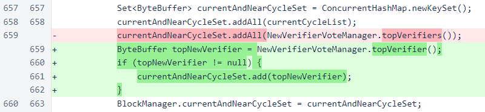
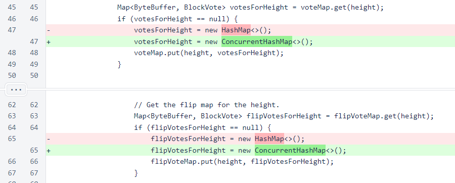
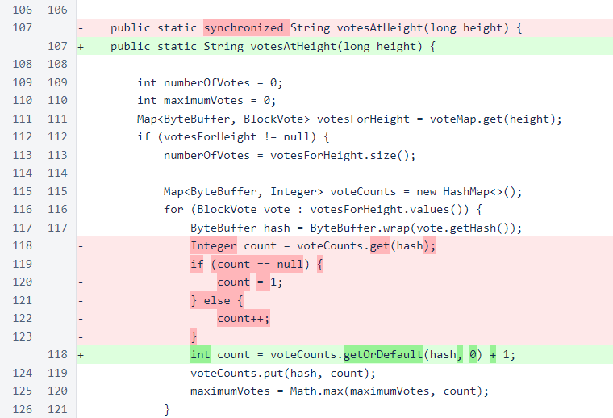
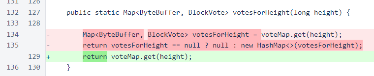
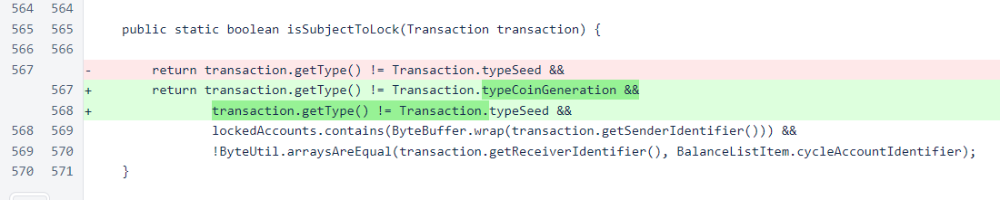
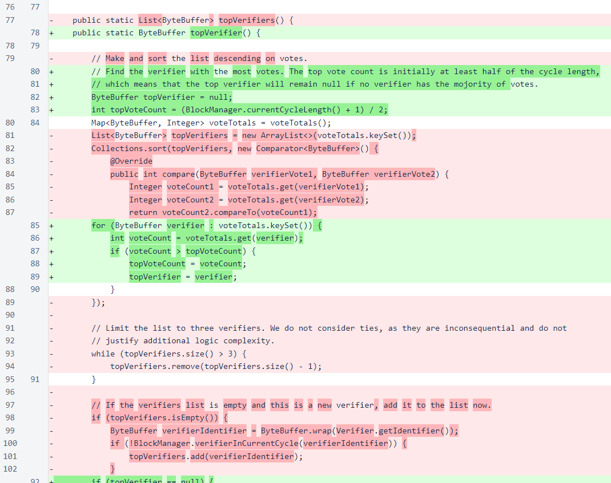
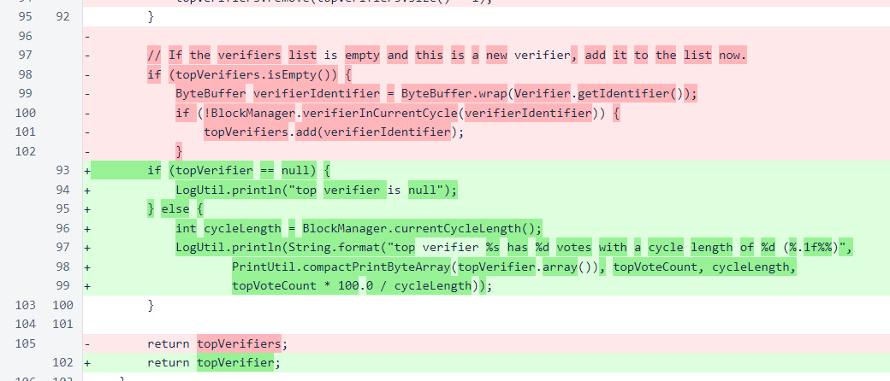
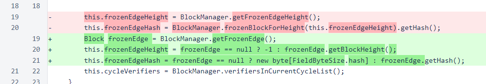
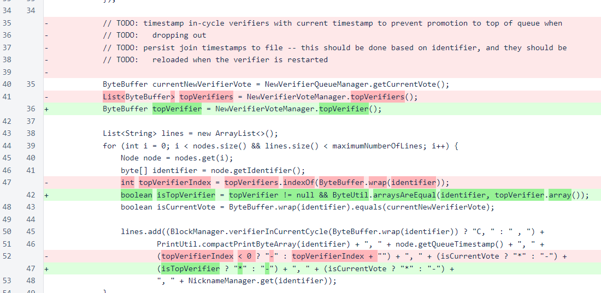

Nyzo version 541 (commit on GitHub) includes improvements to the join process and some minor bug fixes.
This version primarily affects the verifier.
In Block.chainScore(), the calculation for a new verifier has been modified. Instead of a ranking of top new verifiers, only a single top verifier is now assigned a score that allows joining. Previously, the second-place new verifier would have a score of 2, which would sometimes allow joining if the top new verifier did not transmit a block and the in-cycle verifier with a score of 0 was delayed in transmitting its block.
In BlockManager, only the single top verifier is now added to currentAndNearCycleSet.
In BlockVoteManager, votesForHeight and flipVotesForHeight are now ConcurrentHashMap objects. This improves thread safety.
Synchronization has been removed from the votesAtHeight() method. This method was using synchronization to prevent problems with accessing the votesForHeight map. As that map is now a concurrency-safe object, synchronization is no longer required.
Also, the logic for counting votes has been simplified by replacing use of the map's get() method with use of the getOrDefault() method.
In the votesForHeight() method, the map for the requested height is now returned without copying. While returning copies of private, mutable objects is discouraged in object-oriented design, the performance impact of creating copies is non-negligible in this case.
Also of note regarding this method: error logs on verifiers infrequently showed a ConcurrentModificationException being thrown in the creation of the HashMap copy in this method when creating a BlockWithVotesResponse. While the elimination of this copy would only shift the possible location of this exception, the use of a ConcurrentHashMap to store votes at each height has eliminated the problem.
In LockedAccountManager.isSubjectToLock(), transactions of typeCoinGeneration are now explicitly excluded from locking. Such transactions are only allowed to occur in the Genesis block, and they would never be subject to locking. These transactions do not have sender identifiers, which was causing a null-pointer exception to be thrown in this method. This was interfering with the initialization process of new verifiers.
The topVerifiers() method, which returned a ranked list of verifiers, has been replaced with a topVerifier() method, which returns either a single verifier identifier or null. A verifier will be returned only if it has votes from more than half of the current cycle. The join process was originally designed to fill available cycle positions as quickly as possible, even if that meant allowing non-preferred verifiers to join. This modification acknowledges the current reality that the number of verifiers wishing to join the cycle far exceeds available entry positions.
The addition of this verifier to the list in the absence of another verifier is an archaic compensation for poor messaging in the early development process. It is no longer necessary or helpful. Logging statements have been added to display the chosen verifier. When a verifier is chosen, the number of votes for that verifier is displayed both as a count and as a percentage of the current cycle.
The constructor of BootstrapResponseV2 has been rewritten to avoid possible null-pointer exceptions. While these were uncommon, they were observed on running verifiers.
MeshStatusResponse has been updated to reflect the new single-verifier result produced by NewVerifierVoteManager.
For the suggestion that the new-verifier entry should require a majority, ∩20,000 was awarded to 219f...0183. This bounty will be deducted from the funds held by the Nyzo team, and it will not affect the amount of funds that will be transferred to the cycle account.